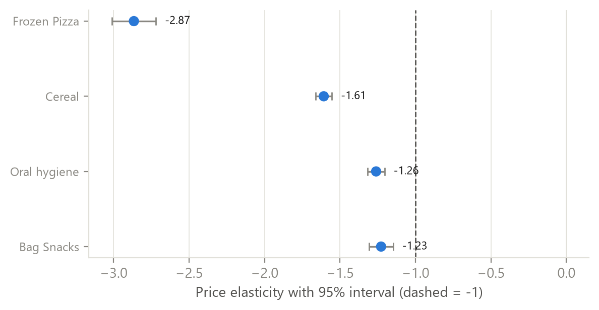

price elasticity of Frozen Pizza: the most price-sensitive category (Bag Snacks -1.2)
volume uplift when feature and display run together, vs +33% for a price cut alone
brand x mechanic combinations that pay back at an assumed 30% margin
gross profit for +5% on General Mills cereal (volume -3.7%, range -3.9% to -3.6%)
Five questions an RGM product answers
- Elasticity - how price-sensitive is each category, brand and product? (p.4)
- Promotions - which mechanics create incremental volume, and which pay back? (p.5)
- Price-pack - is the price per ounce consistent across pack sizes? (p.6)
- Scenarios - what does +x% do to volume, revenue and profit? (p.7)
- Scale - does the same method hold market by market? (p.9)
Price elasticity by category (95% interval)

Recommendations
- Test small price increases first on the least price-sensitive brands (Shultz bag snacks, private-label bag snacks, General Mills cereal); hold price on frozen pizza, where an increase loses revenue.
- Move trade spend from TPR-only cuts (ROI -60% at 30% margin) toward feature + display events, and negotiate their fees.
- Fix the pack ladder before the next price list: Gm Cheerios 18 oz costs 4% more per ounce than Gm Honey Nut Cheerios 12.25 oz.
- Roll out market by market with the same rules; Indiana and Kentucky need more stores before their own elasticities can be published.
Data & methods
Real retail data dunnhumby Breakfast at the Frat: 524,950 store x product x weeks, 55 products, 77 US stores, 156 weeks (2009-2012).
Public data Lingaro website (dated facts), Eurostat HICP.
Simulated NielsenIQ / Circana-style market data, clearly labelled.
Data quality 99.6% of rows pass every check; 2 stores listed twice in the store file were de-duplicated; Colgate and Quaker leave the shelf in 2011 (kept in history, not simulated).
Stack SQL (DuckDB) · Python (statsmodels) · Power BI (TMDL + PBIR, 41 measures).
How to read Titles state the conclusion; the tag top right gives the data source; dashed lines are thresholds; ranges are 95% intervals.